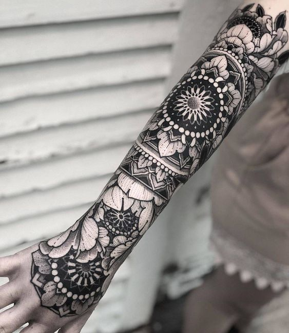

The style I'm looking for is blackwork.
I want to tattoo my whole body, including my hands and neck Please let me
know what you think whoever is reading this.
I trust more the opinion of professionals since mine its based on pure
observation.
○ Harmony with the body.
Tatto shapes that make the body look more symmetric (Like a suit), for
example:
Knees
This forearm-hand
This leg piece shin guard
This hard blackwork leg
This shoulder
I like how it rounds up making it look in harmony
with the shape of the human body.
○ Botanics.
I love plants, I want to have a lot of them to fill spaces with. It may look
a oversued but it's okay for me.
Botanical filled up arm
Just like these kind of flowers
Beauty
Botanics coming out from shoulders to chest
Same
Combination with mandalas is ok for me too

○ Balance.
The balance between skin, ink, mandalas/flowers and content
○ Specific ideas.
Ideas that might help
Just love this tattoo. Having a buddha in my hand like this would be
amazing